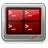
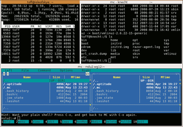

Terminator
Dieser Artikel wurde für die folgenden Ubuntu-Versionen getestet:
Ubuntu 16.04 Xenial Xerus
Ubuntu 14.04 Trusty Tahr
Zum Verständnis dieses Artikels sind folgende Seiten hilfreich:

Terminator  ist ein in Python geschriebener Terminal-Multiplexer, der es ermöglicht, mehrere Terminals innerhalb eines einzigen Fensters zu benutzen und mittels Tastatur-Kürzeln zwischen diesen zu wechseln. Dies entspricht in etwa dem Tiling-Modus von Fenstermanagern. So kann man ohne Tabs oder weitere Terminal-Fenster mehrere Shells zur selben Zeit geöffnet halten.
ist ein in Python geschriebener Terminal-Multiplexer, der es ermöglicht, mehrere Terminals innerhalb eines einzigen Fensters zu benutzen und mittels Tastatur-Kürzeln zwischen diesen zu wechseln. Dies entspricht in etwa dem Tiling-Modus von Fenstermanagern. So kann man ohne Tabs oder weitere Terminal-Fenster mehrere Shells zur selben Zeit geöffnet halten.
Ursprünglich für GNOME entwickelt, kann das Programm inzwischen mit jeder beliebigen Desktop-Umgebung verwendet werden. Im Gegensatz zu Programmen wie screen oder tmux wird jedoch explizit ein XServer (grafischer Desktop) benötigt.
Installation¶
|  |
| Zugriff auf drei verschiedene Rechner |
Terminator kann aus den offiziellen Paketquellen installiert [1] werden:
terminator (universe)
 mit apturl
mit apturl
Paketliste zum Kopieren:
sudo apt-get install terminator
sudo aptitude install terminator
PPA¶
Unter Ubuntu 14.04 kann eine aktuellere Version aus einem "Personal Package Archiv" (PPA) [2] installiert werden.
Adresszeile zum Hinzufügen des PPAs:
ppa:gnome-terminator/ppa
Hinweis!
Zusätzliche Fremdquellen können das System gefährden.
Ein PPA unterstützt nicht zwangsläufig alle Ubuntu-Versionen. Weitere Informationen sind der  PPA-Beschreibung des Eigentümers/Teams gnome-terminator zu entnehmen.
PPA-Beschreibung des Eigentümers/Teams gnome-terminator zu entnehmen.
Damit Pakete aus dem PPA genutzt werden können, müssen die Paketquellen neu eingelesen werden.
Nach dem Aktualisieren der Paketquellen erfolgt die Installation wie oben angegeben.
Bedienung¶
Terminator lässt sich ausschließlich über Tasten-Kombinationen steuern. Die wichtigsten Kombinationen sind in folgender Tabelle aufgelistet:
| Kombination | Auswirkung |
| Strg + ⇧ + O | Das Terminal horizontal teilen |
| Strg + ⇧ + E | Das Terminal vertikal teilen |
| Strg + ⇧ + S | Die Bildlaufleiste verstecken |
| Strg + ⇧ + W | Das aktuelle Terminal schließen |
| Strg + ⇧ + Q | Programm beenden |
| Strg + ⇧ + T | Einen neuen Reiter öffnen |
| Strg + ⇧ + N | Zum nächsten Terminal wechseln |
| Strg + ⇧ + P | Zum vorherigen Terminal wechseln |
| Strg + ⇧ + X | Vollbildanzeige des aktiven Terminals |
| F11 | Vollbild-Modus |
| "Drag & Drop" | |
Strg +  | Terminal zum positionieren aufnehmen |
| Strg loslassen | Position anzeigen lassen |
| loslassen | Terminal an Position positionieren |
Eine ausführliche Liste aller möglichen Tasten-Kombinationen findet man in der Manpage.
Layouts¶
Der Terminator erlaubt es, unter Einstellungen verschiedene Layouts zu definieren. Hier kann man das aktuelle Layout mittels "Add" hinzufügen und einen Namen dafür wählen. Diese gespeicherten Layouts können jeweils beim Starten mittels des Aufrufparameters --layout= (oder kurz -l) mitgegeben werden.
Profile¶
In den Einstellungen können verschiedene Profile erstellt werden. Hier kann pro Profil ein eigenes Erscheinungsbild wie Farben, Fonts und Scrollverhalten eingestellt werden. Das momentane Profil kann im aktiven Splitterfenster per Rechtsklick geändert werden. Es ist auch möglich, mit Hilfe des Kommandozeilenparameters --profile= (oder kurz -p) ein gespeichertes Profil als Voreinstellung mitzugeben.
Konfiguration¶
Terminator bietet optional die Möglichkeit, eine individuelle Konfiguration vorzunehmen. Dazu öffnet man die Datei ~/.config/terminator/config mit einem Editor [3]. Ist die Datei noch nicht vorhanden, erstellt man ein neues Dokument unter diesem Namen.
Nun kann man die gewünschten Parameter in der Form option = value in die Konfigurations-Datei eintragen. Eine kleine Auswahl an Optionen findet sich in der folgenden Tabelle:
| Parameter | |||
| Option | Werte | Standard | Auswirkung |
allow_bold | boolean | true | Erlaubt es Applikationen, fetten Text auszugeben. |
enable_real_transparency | boolean | false | Terminator versucht, echte Transparenz zu verwenden. |
silent_bell | boolean | true | Lässt das Terminal aufblinken, falls Escape-Sequenzen zur Terminal-Glocke geschickt werden. |
force_no_bell | boolean | false | Alle Escape-Sequenzen an die Terminal-Glocke werden ignoriert. |
use_theme_colors | boolean | false | Es werden anstatt der vorkonfigurierten Farben die Themen-Farben verwendet. |
background_color | HTML-Farbcode | #000000 | Die Standard-Hintergrundfarbe wird festgelegt. |
background_type | solid, image, transparent | solid | Der Typ des Terminal-Hintergrundes wird festgelegt. |
font | Pango Font-Name | Mono 8 | Legt die Schriftart fest. |
borderless | boolean | false | Terminator startet ohne Fenster-Dekoration. |
extreme_tabs | boolean | false | Weitere Tabs können innerhalb eines Tabs geöffnet werden. |
Eine vollständige Liste der möglichen Optionen findet man in der Manpage mit dem Namen "terminator_config".
Plugins¶
Die Funktionalität des Terminators kann sowohl durch mitgelieferte als auch durch selbst erstellte Plugins erweitert werden.
 Übersichtsartikel
Übersichtsartikel- Erstellt mit Inyoka
-
 2004 – 2017 ubuntuusers.de • Einige Rechte vorbehalten
2004 – 2017 ubuntuusers.de • Einige Rechte vorbehalten
Lizenz • Kontakt • Datenschutz • Impressum • Serverstatus -
Serverhousing gespendet von